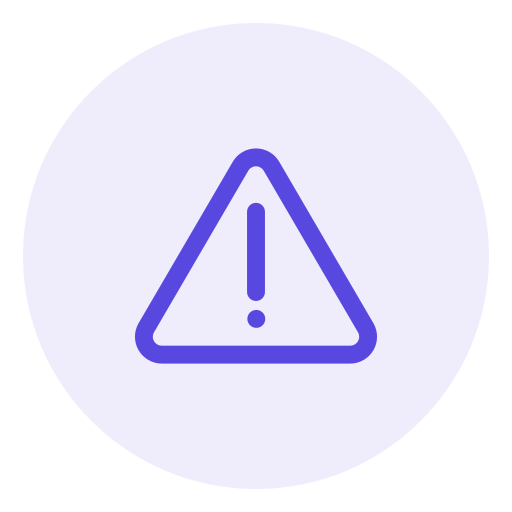

Vititech
Visão Geral
Relatórios
Sair
Voltar
Faixas de Umidade:
Bom
— 40% a 70%
Atenção
— 35% ou 75%
Ruim
— menor que 35% ou maior que 75%
Umidade Atual
--%
Abaixo da faixa ideal

Alertas de hoje:
-- alertas
Calculando...
Umidade do Solo em Tempo Real
Incidência de maior e menor umidade do solo